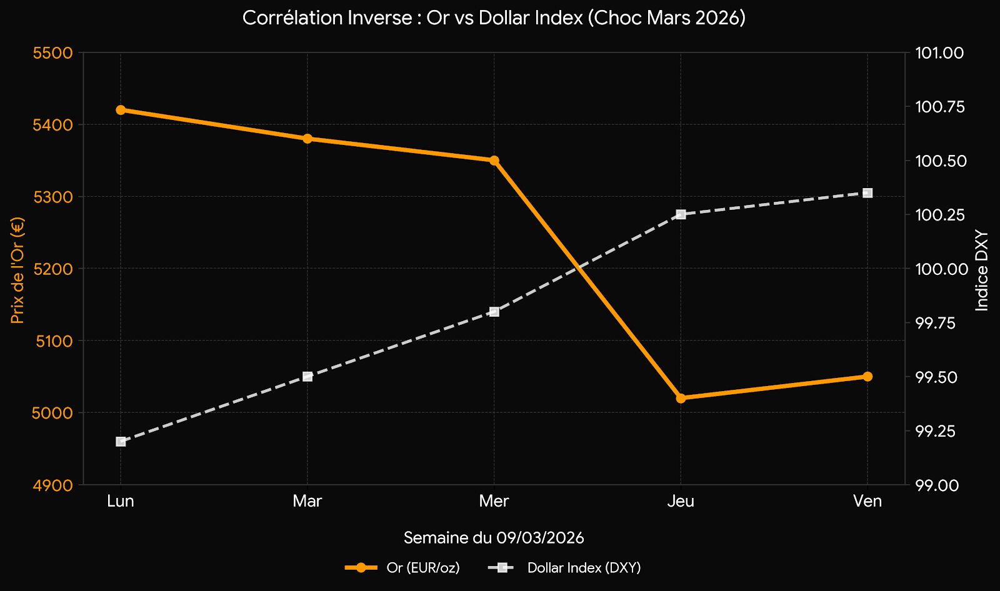

Le conflit militaire en Iran et la paralysie du détroit d'Ormuz ont plongé les marchés dans une phase d'incertitude critique. Environ 20 millions de barils par jour sont actuellement bloqués, créant un choc d'offre que les réserves stratégiques peinent à compenser. Ce rapport analyse l'impact de ce pétrole à 100 $ sur les politiques monétaires et la résilience relative des différentes zones économiques.
Le momentum est dominé par une divergence croissante : alors que l'inflation importée pousse les banques centrales européennes vers une posture hawkish, la dégradation du marché du travail américain commence à tempérer l'ardeur de la Fed, malgré un dollar qui reste la valeur refuge absolue.
1. USD : Le report des baisses de taux à 2027
L'inflation Core PCE, attendue à 3,1 %, contraint la Réserve Fédérale à maintenir une posture restrictive. Les marchés, qui anticipaient initialement plusieurs baisses cette année, ne pricent désormais plus qu'un seul mouvement, voire un report complet des baisses de taux à 2027.
Pourtant, le "paradoxe de l'emploi" devient flagrant : le dernier rapport NFP a montré une perte de 92 000 emplois avec un taux de chômage grimpant à 4,4 %. La Fed se retrouve coincée entre la défense de sa crédibilité inflationniste (essence à 4,25 $/gallon) et un ralentissement économique qui s'accélère.
2. Énergie : Le pétrole comme arme de destruction massive de la demande
Malgré l'annonce historique de l'AIE libérant 400 millions de barils de réserves, le Brent reste scotché au-dessus de la barre des 100 $. Le marché semble sceptique quant à une résolution rapide du conflit, intégrant désormais un risque de perturbation de plusieurs mois dans le Golfe.

L'indépendance énergétique américaine agit comme un bouclier, expliquant pourquoi le S&P 500 ne recule que de 3 % quand les marchés européens et asiatiques décrochent de 6 à 9 %. Cependant, le coût des intrants (engrais, plastiques, logistique) fait craindre une inflation récessionniste durable si le blocage d'Ormuz persiste.
3. Analyse par Zones Monétaires : La Divergence des Politiques
Zone Euro (EUR) : La BCE fait face au fantôme de 2022. Le marché price désormais une hausse des taux d'ici juillet pour contrer l'inflation énergétique, alors même que l'économie européenne est la plus exposée au choc. Le taux swap 10 ans se dirige vers les 3 %, signe d'une tension extrême sur les taux longs.
Royaume-Uni (GBP) : La BoE est dans une position similaire, avec une inflation déjà au-dessus de la cible. Le marché a brutalement écarté les espoirs de baisse de taux pour 2026, poussant les taux de swap 2 ans en hausse de 50 points de base depuis le début du conflit.
Australie & Canada (AUD/CAD) : Ce sont les grands gagnants du G10. Le statut d'exportateur net d'énergie soutient leurs devises. La RBA est attendue avec une probabilité de hausse des taux de 70 % le 17 mars prochain.
Marchés Émergents (EM) : Le choc est violent pour les pays importateurs d'énergie. Le Forint hongrois (HUF), le Peso chilien (CLP) et le Rand sud-africain (ZAR) subissent des pertes de 2,5 à 4 % face au dollar en raison de l'explosion de leurs déficits énergétiques.
4. L'Énigme de l'Or : Pourquoi chute-t-il en pleine guerre ?
La semaine dernière, l'or a connu une correction brutale, chutant de 5 420 € à environ 5 020 € l'once, soit une perte de 400 € en une matinée. Pour beaucoup d'investisseurs particuliers, ce mouvement paraît contre-intuitif en période de conflit.
L'explication réside dans le renforcement massif du Dollar : Alors que le pétrole reste cher et que les flux maritimes sont paralysés, le dollar s'impose comme l'actif de liquidité par excellence. Soutenu par une économie américaine énergétiquement autonome, le billet vert, dont l'indice DXY vise la zone des 100,25/35, renchérit mécaniquement le coût de l'or pour les investisseurs.
De plus, le report des baisses de taux de la Fed à 2027 augmente le coût d'opportunité de l'or. En période de désendettement forcé, les capitaux délaissent les métaux précieux pour se réfugier dans la sécurité rémunérée du "Roi Dollar".
| Actif | Niveau / Tendance | Observation |
|---|---|---|
| Brent Crude | > 100 $ / baril | Incapacité à remplacer les 20mb/j bloqués malgré l'AIE. |
| USD (DXY) | Hausse (100.25) | Actif de liquidité absolue face au choc énergétique. |
🎯 IDÉES DE TRADES & OPPORTUNITÉS
Dollar Long : Tant que le pétrole ne reflue pas durablement, le dollar restera "bid" par défaut. C'est le trade de résilience par excellence.
Sélection Sectorielle & Devises :
- CAD & AUD : Profitez du statut d'exportateur net d'énergie. L'AUD reste soutenu par les paris de hausse de la RBA (70% probabilité).
- Valeurs Énergétiques US : Les producteurs domestiques sont les grands gagnants du prix élevé du baril sans exposition aux risques du Golfe.
- Risque Sovereign EM : Évitez les devises dépendantes des importations d'énergie (HUF, ZAR) tant que la volatilité reste sur ces niveaux.
Sources & Données
- ING Think : Fed to delay rate cuts as war clouds the outlook (13 Mars 2026)
- ING Think : Rates Spark - Inflation expectations on the march again (11 Mars 2026)
- ING FX Daily : Oil and equity volatility taking dollar back up (12 Mars 2026)
- ING Think : ECB hikes, Fed cuts? Don't bet on it (13 Mars 2026)
- ING Economic Analysis : EM winners and losers from the oil shock (Mars 2026)